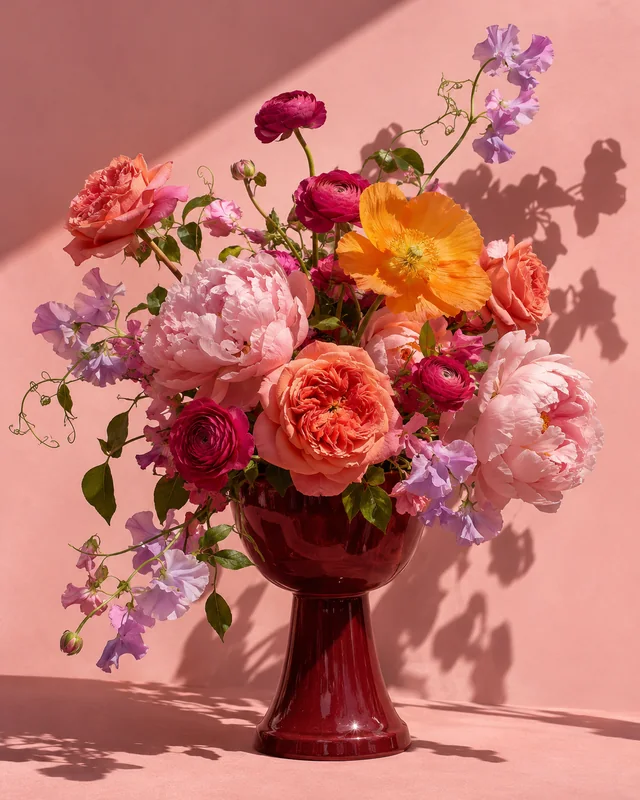

Подбор букета
Бюджет меняет список рекомендаций. Выберите один из букетов из каталога Maison Bloom.
Симулятор Telegram
Выберите повод и бюджет. Бот предложит конкретные букеты, поможет добавить открытку и покажет условия доставки по Санкт-Петербургу.

Telegram · Демо-чат
Это симуляция. Заявки и личные данные не отправляются.
Бюджет меняет список рекомендаций. Выберите один из букетов из каталога Maison Bloom.
Сравните курьера и самовывоз. При доставке можно выбрать интервал.
Посмотрите, как меняется сводка при выборе периодичности.